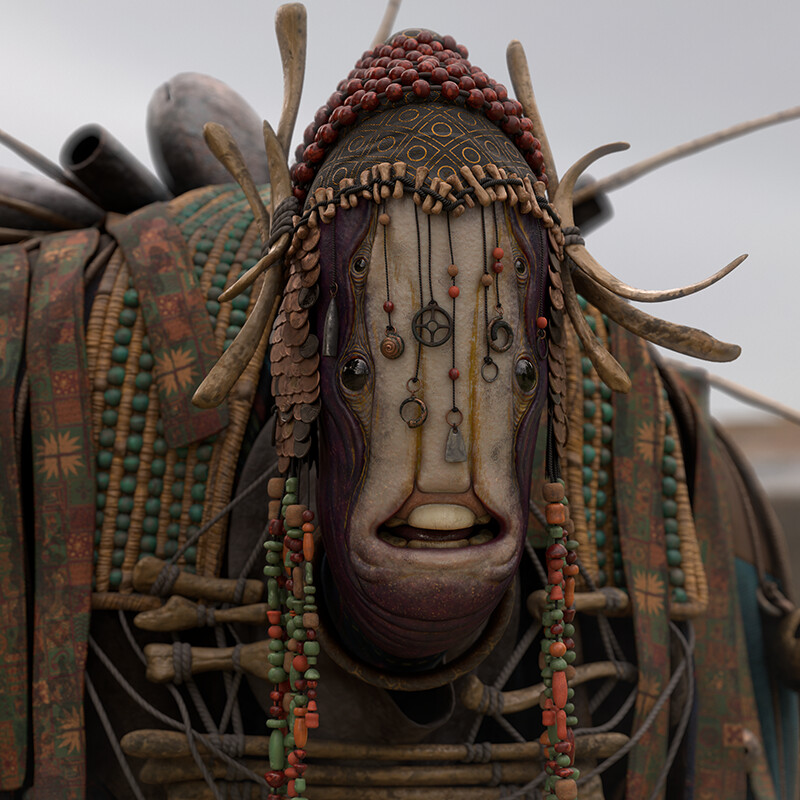
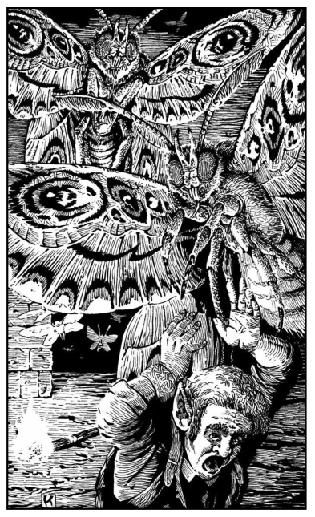

Creatures
| Creature | Type | Status | First seen | Page |
|---|---|---|---|---|
| Batros | Chül trader | Alive | Session 1 | Batros |
| The Splinter | Unknown well monster | Unknown | Session 1 rumor | The Splinter |
| Giant Lantern Moths | Giant insect | Killed | Session 2 | Giant Lantern Moths |
| The Paperkin | Origami creatures | Present | Session 3 | The Paperkin |
Batros
Aliases: The Chül; B'AH'Trosss A'M Vess Uth Kassril'tassirr Pallosh
Role: Chül trader in Arakay
Status: Alive
First seen: Session 1

Summary
Batros is a Chül, a large, many-limbed creature who buys and sells gear in Arakay. Kollaro described him as a buyer for unwanted equipment. The party found him, and Ed bought a Fire Rock for five pieces, a stone that makes a loud noise when thrown down hard on the ground. The rest of the blanket was beyond their purses: a green rod of glowing metal, a silvery fabric pouch that looked costly, and a lapis-look necklace with a cat charm at 150 gp.
What the party knows
- Lives or trades in Arakay.
- Buys and sells gear.
- Drives hard bargains.
- Ed bought a Fire Rock from a pile of them for 5 pieces.
- His wares included a green rod of glowing metal, said to sharpen a spell, a silvery fabric pouch nobody asked about, and a necklace that looked like lapis lazuli with a cat charm, at 150 gp.
What is not established
- Species traits, AC, HP, attacks, or numbers.
- What a Chül is, and whether others of his kind trade in the city.
- Where he keeps his stock.
- Why he trades in the city.
- What the silvery pouch holds, or what he would ask for it.
The Splinter
Aliases: The frog monster
Status: Unknown
First seen: Session 1, by rumor
Summary
The thing the urchins call the Splinter. They say it takes children and drags them down the Well of Frogs. The party has not seen it.
What the party knows
- Called the Splinter by the urchins.
- Described as a frog monster.
- Takes children down the well.
- Associated with the green water below the well.
- Something waited under the green water at the end of Session 1.
What is not established
- Its true shape, size, or nature.
- Whether it is one creature or several.
- Whether it is the same as the frog carvings in the well shaft.
- Whether it is connected to the Chül merchant. The archive treats them as separate until proven otherwise.
Giant Lantern Moths
Type: Giant insect
Status: Three killed in Session 2
First seen: Session 2
Summary

Grey, fuzzy, hand-sized-to-larger moths that roost on corridor ceilings under Arakay. They are drawn to light and will attack the source rather than the person holding it.
What the party knows
- They are angered by light and go for torches and lanterns.
- They can be fought in the dark by anyone with infravision.
- Dio's torch is a liability as much as a help around them.
Open questions
[?]Are they natural, or bred in the tunnels?[?]What do they eat, and what else lives on them?[?]Does anything hunt them?
The Paperkin
Aliases: The paper king, the name the notes use; origami creatures
Status: Present
First seen: Session 3
Summary
Small origami creatures living in the Archivist's chamber. When he traded Ed a spellbook for the two clay tablets, a small paper figure of a horse jumped out of the book. The creatures are called the paperkin and stay to one shelf.
What the party knows
- A paper horse jumped out of the new spellbook.
- The origami creatures are collectively the paperkin.
- They stay to one shelf.
What is not established
- Whether they live in the spellbook, on the shelf, or both.
- What they are, whether they are alive, and what they can do.
- How many there are.
- Whether the Archivist made them or keeps them.